In this lab, you'll learn how to access all relevant data from a single source and turn data into insights through the Microsoft PowerBI integration:
Access first party data seamlessly in Snowflake Leverage the Data Marketplace to query live POS data from 3rd party providers Set up self-serve analytics via Power BI
Target Audience
Business Intelligence Architects and developers looking to get the most out of Snowflake and Power BI together.
What you'll learn
The exercises in this lab will walk you through the steps to:
Create stages, databases, tables, user, role and warehouses Load data into a database within your Snowflake account Engineer and model data optimally for BI consumption Connect to your Snowflake account to Power BI and author reports Visualize the data and perform basic data analysis Perform optimization techniques to speed report/dashboard responsiveness
Prerequisites:
- Use of the Snowflake free 30-day trial environment
- Access to an Azure Account with the ability to launch a Azure Cloud Shell, and create an Azure Storage Container
- Basic knowledge of Power BI and its intended use cases
- Basic knowledge of SQL, database concepts, and objects
- Familiarity with CSV comma-delimited files
Steps to Prepare Your Lab Environment
If not yet done, register for a Snowflake free 30-day trial at https://trial.snowflake.com
- The Snowflake Enterprise Edition on Azure West US 2, East US 2 (Washington or Virginia) regions recommended. Or we suggest you select the region which is physically closest to you.
- After registering, you will receive an email with an activation link and your Snowflake account URL. Bookmark this URL for easy, future access. After activation, you will create a user name and password. Write down these credentials.
If you do not already have an Azure account please create a new account using this link - Create Your Azure Free Account. Make sure you have the permissions to use an Azure Cloud Shell, create an Azure Storage Container and a Azure Shared Access Signature (SAS) Token. Once logged in to your account select an Azure region closest to your Snowflake account, Azure West US 2, East US 2 (Washington or Virginia) regions recommended for this lab.
If you don't already have Power BI Desktop on your lab workstation, please download and install the latest version using the following link: Power BI Desktop
If you don't already have DAX Studio on your lab workstation, please download and install the latest version using the following link: DAX Studio - The ultimate client tool for working with DAX.
Download and install the latest version of Azure Storage Explorer (Optional).
Download the Snowflake and Azure script files to your local machine
- Click here: lab-snowflake-powerbi-load-to-snowflake.sql and download the file. This file contains pre-written SQL commands and we will use this file later in the lab.
- Click here: lab-snowflake-powerbi-load-to-azure-blob.sh and download the file. This file contains the shell script we will use to copy the lab data files from Github directly to an Azure Storage container and we will use this file later in the lab.
Logging Into the Snowflake User Interface (UI)
Open a browser window and enter the URL of your Snowflake 30-day trial environment that was sent with your registration email.
You should see the login screen below. Enter the username and password used for registration.

Close any Welcome Boxes and Tutorials
You may see welcome and helper boxes appear when you log in for the first time. Also an "Enjoy your free trial..." ribbon at the top of the screen. Minimize and close these boxes.

Navigating the Snowflake UI
Let's get you acquainted with Snowflake! This section covers the basic components of the user interface. We will move left to right from the top of the UI.
The navigation bar allows you to switch between the different areas of Snowflake:
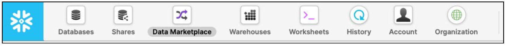
The Databases tab shows information about the databases you have created or have permission to access. You can create, clone, drop, or transfer ownership of databases, as well as load data in the UI. Notice that several databases already exist in your environment. However, we will not be using these in this lab.

The Shares tab is where data sharing can be configured to easily and securely share Snowflake tables among separate Snowflake accounts or external users, without having to create a copy of the data. We will cover data sharing in Section 10.

The Warehouses tab is where you set up and manage compute resources known as virtual warehouses to load or query data in Snowflake. A warehouse called COMPUTE_WH (XL) already exists in your environment.
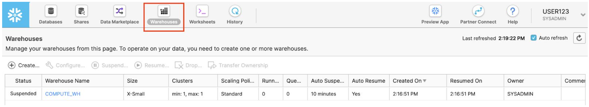
The Worksheets tab provides an interface for submitting SQL queries, performing DDL and DML operations, and viewing results as your queries or operations complete. The default Worksheet 1 appears when this tab is accessed.
The left pane contains the database objects browser which enables users to explore all databases, schemas, tables, and views accessible by the role selected for a worksheet. The bottom pane displays the results of queries and operations.
The various sections of this page can be resized by adjusting their sliders. If during the lab you need more room in the worksheet, collapse the database objects browser in the left pane. Many of the screenshots in this guide will keep this section closed.

At the top left of the default worksheet, to the right of the worksheet tab, click on the downward facing arrow and select Load Script. Browse to the lab_scripts.sql file you downloaded in the previous section and select Open. All of the SQL commands you need to run for the remainder of this lab will now appear on the new worksheet. Do not run any of the SQL commands yet. We will come back to them later in the lab and execute them one at a time.

The History tab allows you to view the details of all queries executed in the last 14 days from your Snowflake account. Click on a Query ID to drill into it for more information.

Clicking on your username in the top right of the UI allows you to change your password, roles, and preferences. Snowflake has several system defined roles. You are currently in the default role of SYSADMIN and will stay in this role for the majority of the lab.

This module will walk you through the steps to:
- Create a blob storage account
- Create a container in the storage account
- Generate a SAS token to use as credentials when connecting to the storage account
- Load the lab data files into the storage account from github - via azure shell
- (optional) Connect Azure Storage Explorer to the storage account to browse files
4.1 Create a blob storage account
From the Azure Portal, navigate to Storage accounts. There are multiple ways to get there, selecting from the Menu being one of those. Next we want to select "+ Create" to create a new storage account 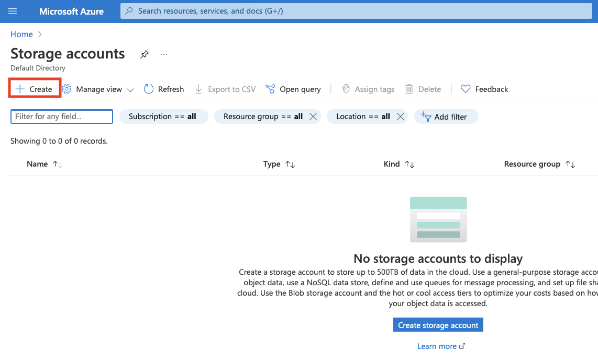
For this lab, we will choose the following options when creating the storage account:
- Resource Group: (Create new) snowflake_powerbi_lab_rg
- Storage account name: (must be unique) e.g. ab12345lab
- Region: (US) West US 2
- Performance: Standard
- Redundancy: Locally-redundant storage (LRS) (other tabs leave as default settings)


Click "Review + create" to accept 
Click "Create" to complete the storage account creation.":?il8./  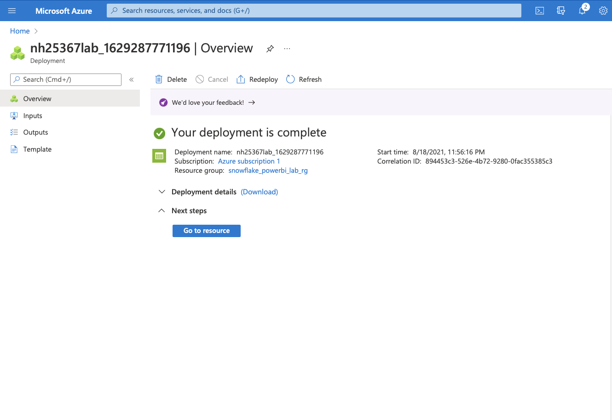
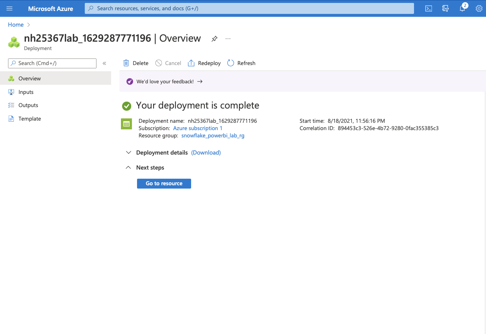
Click "Go to resource" once the storage account creation completes.
4.2 Create a blob container to house the lab files
Navigate to "Containers" within the storage account
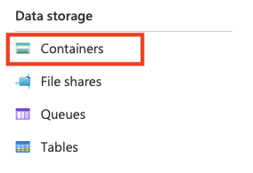
Select "+ Container" and create a new lab-data container:

4.3 Generate a SAS token for accessing the blob container
From the storage account containers page, click on the "lab-data" container

Then select "Shared access tokens" 
Select Read; Add; Create; Write; Delete; List permissions for the SAS token 

Set the "Expiry" date to something in the future - e.g. 1 month or 1 year and click "Generate SAS token and URL"
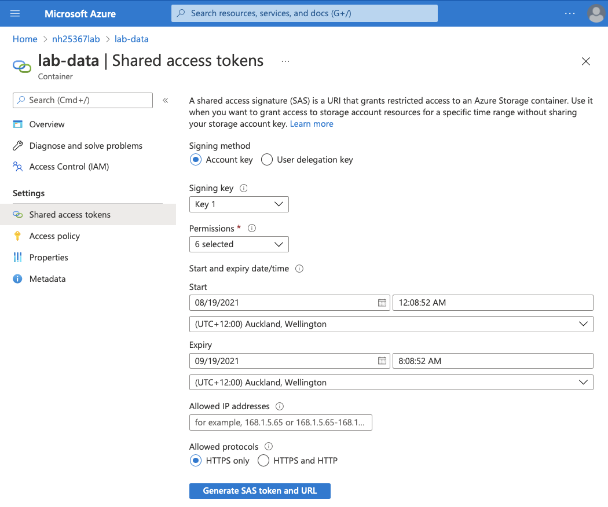
Copy the values from "Blob SAS token" and "Blob SAS URL" and save them somewhere for use later in this lab
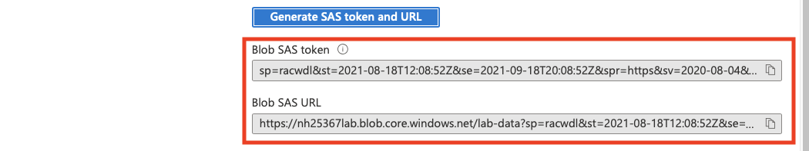
4.4 Load Azure Cloud Shell and run script to load files
Click the Azure Cloud Shell icon , or select from the drop-down menu: 
Choose "Bash" for the shell 
Click "Create storage" 
Click "Upload/Download files" and upload a copy of the "lab-snowflake-powerbi-load-to-azure-blob.sh" file (found in the github repo) 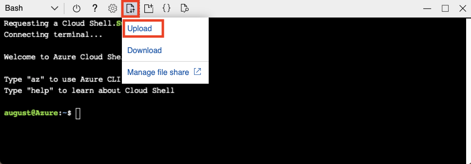
Type "code lab-snowflake-powerbi-load-to-azure-blob.sh" to open the file in Visual Studio Code, then replace the <YOURACCOUNT> with your blob container name from step 4.2 and replace <YOURSASTOKEN> with the SAS token created in step 4.3. Once the values are updated, save the file and close the editor.

e.g.:

To run the script, type "bash lab-snowflake-powerbi-load-to-azure-blob.sh" in the Azure Shell and hit Enter. The script will then start copying the lab data files from the Git Repo and into the Azure Storage account. The script will take approximately 1 to 1¼ hours to copy all of the files across, and it will do so without consuming any of your own internet bandwidth.

4.5 (Optional) Add the blob storage account in Storage Explorer
Azure Storage Explorer is a free tool that lets you manage Azure cloud storage resources from your desktop. You can download and install Azure Storage Explorer from here: Azure Storage Explorer
Right-click "Storage Accounts" and select "Connect to Azure Storage..."

Select "Blob container"
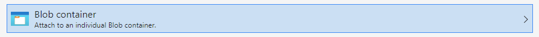
Select "Shared access signature URL (SAS)"

Enter the "Blob SAS URL" that was generated in 4.3 above. The Display name should default to "lab-data" (unless you changed the container name). Click "Next" and then "Connect" on the next screen.
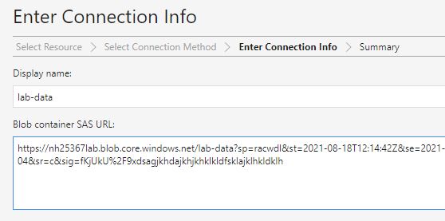
You should now see the files that were loaded into the storage account in 4.4


Let's start by preparing to load the structured data on Customer Churn into Snowflake.
This module will walk you through the steps to:
- Create a virtual warehouse
- Create a role and user
- Granting of a role to a user and privileges to a role
- Create a database and tables
- Create external and internal stages
- Create a file format for the data
- Load data into a table and querying the table
Getting Data into Snowflake
There are many ways to get data into Snowflake from many locations including the COPY command, Snowpipe auto-ingestion, an external connector, or a third-party ETL/ELT product. More information on getting data into Snowflake, see https://docs.snowflake.com/guides-overview-loading-data
We are using the COPY command and Azure Blob storage for this module in a manual process so you can see and learn from the steps involved. In the real-world, a customer would likely use an automated process or ETL product to make the data loading process fully automated and much easier.
The dataset we are using for this lab was provided through partnership with Drop (https://www.joindrop.com/). The data consists of 1.7bn point of sales transactions and their related dimensional attributes for anonymized stores located in Canada and the United States.
Below is a snippet from one of the Location CSV data files:

It is in comma-delimited format with no header line. This will come into play later in this module as we configure the Snowflake table which will store this data.
5.1 Start using Worksheets and Create a Virtual Warehouse
At the top of the Snowflake UI, click the Worksheets tab. You should see the worksheet with all the SQL we loaded in a prior step.

Before we start using SQL in Worksheets we will turn on Code Highlight by clicking on the 3 dots on the top right hand corner of the worksheet, and then clicking on Turn on Code Highlight. This will make it easier to identify the SQL that will be executed.
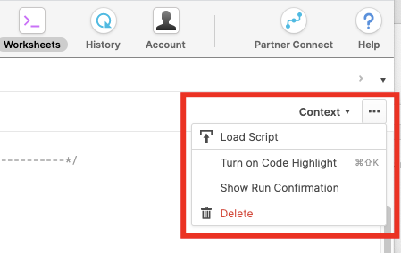
To execute a SQL command or commands, click or select multiple commands with your mouse. The SQL command(s) will be highlighted in BLUE. You can now either press COMMAND & RETURN on a Mac or CONTROL & ENTER on Windows; or you can click the RUN button towards the top left hand slide of the Worksheet.

Warning
In this lab, never check the "All Queries" box at the top of the worksheet. We want to run SQL queries one at a time in a specific order; not all at once.
Next we will briefly switch roles to the ACCOUNTADMIN role primarily to allow us to create a specific role for this workshop. Execute the SQL command shown below.
USE ROLE ACCOUNTADMIN;
Let's create two Warehouses called ELT_WH and POWERBI_WH and grant all access to SYSADMIN. We create a Warehouse for each workload so there will never be contention between data loading operations, and BI operations. Note: that the Warehouses are configured to auto suspend and resume, this prevents the unnecessary use of credits if a Warehouse is not being used with the convenience that it will automatically resume when needed.
CREATE OR REPLACE WAREHOUSE ELT_WH
WITH WAREHOUSE_SIZE = 'X-SMALL'
AUTO_SUSPEND = 120
AUTO_RESUME = true
INITIALLY_SUSPENDED = TRUE;
GRANT ALL ON WAREHOUSE ELT_WH TO ROLE SYSADMIN;
CREATE OR REPLACE WAREHOUSE POWERBI_WH
WITH WAREHOUSE_SIZE = 'MEDIUM'
AUTO_SUSPEND = 120
AUTO_RESUME = true
INITIALLY_SUSPENDED = TRUE;
GRANT ALL ON WAREHOUSE POWERBI_WH TO ROLE SYSADMIN;
Now we will create a role named POWERBI_ROLE that will be used to control access to objects in Snowflake. We will also GRANT all privileges on the POWERBI_WH Warehouse to this role. We will also grant the POWERBI_ROLE to the SYSADMIN role to allow SYSADMIN to have all the POWERBI_ROLE privileges.
CREATE OR REPLACE ROLE POWERBI_ROLE COMMENT='Power BI Role';
GRANT ALL ON WAREHOUSE POWERBI_WH TO ROLE POWERBI_ROLE;
GRANT ROLE POWERBI_ROLE TO ROLE SYSADMIN;
The next step is to create a user that will be used by Power BI desktop in today's lab to connect to the Snowflake account. Users' could also use their own accounts, or Single Sign On could be configured so that Azure Active Directory accounts could be used. The user POWERBI will be created and assigned a default role, warehouse and database to establish the default context when connected to the Snowflake account.
Note that the SQL statement has a password "PBISF123", you can change the password to one that you prefer. Do note the password you use if you do change it as it will be required for the next portion of the lab when Power BIwill connect to Snowflake.
We will also grant the POWERBI_ROLE to the POWERBI user.
Finally we will switch to the SYSADMIN role for the next steps.
CREATE OR REPLACE USER POWERBI PASSWORD='PBISF123'
DEFAULT_ROLE=POWERBI_ROLE
DEFAULT_WAREHOUSE=POWERBI_WH
DEFAULT_NAMESPACE=LAB_DW.PUBLIC
COMMENT='Power BI User';
GRANT ROLE POWERBI_ROLE TO USER POWERBI;
5.2 Create a Database and Tables
First, as SYSADMIN, let's create a database called LAB_DB that will be used for loading the retail sales data. Then assign the usage on the database to the POWERBI_ROLE. We will also grant all privileges on the default schema, PUBLIC, in the database to the POWERBI_ROLE.
USE ROLE SYSADMIN;
CREATE DATABASE IF NOT EXISTS LAB_DB;
GRANT USAGE ON DATABASE LAB_DB TO ROLE POWERBI_ROLE;
Let's now switch context to the LAB_DB database and PUBLIC schema. As well as switch to use the ELT_WH warehouse. The context for executing SQL commands is shown in the top right hand corner of the worksheets.
USE LAB_DB.PUBLIC;
USE WAREHOUSE ELT_WH;

Next we will create all of the tables into which we will load retail sales data from our Azure Blob Storage container. For all tables SELECT privileges will be granted to the POWERBI_ROLE as well.
CREATE OR REPLACE TABLE CATEGORY (
CATEGORY_ID NUMBER(38,0),
CATEGORY_NAME VARCHAR(50)
);
CREATE OR REPLACE TABLE CHANNELS (
CHANNEL_ID NUMBER(38,0),
CHANNEL_NAME VARCHAR(50)
);
CREATE OR REPLACE TABLE DEPARTMENT (
DEPARTMENT_ID NUMBER(38,0),
DEPARTMENT_NAME VARCHAR(50)
);
CREATE OR REPLACE TABLE ITEMS (
ITEM_ID NUMBER(38,0),
ITEM_NAME VARCHAR(250),
ITEM_PRICE FLOAT,
DEPARTMENT_ID NUMBER(38,0),
CATEGORY_ID NUMBER(38,0),
TMP_ITEM_ID NUMBER(38,0)
);
CREATE OR REPLACE TABLE SALES_ORDERS (
SALES_ORDER_ID NUMBER(38,0),
CHANNEL_CODE NUMBER(38,0),
CUSTOMER_ID NUMBER(38,0),
PAYMENT_ID NUMBER(38,0),
EMPLOYEE_ID NUMBER(38,0),
LOCATION_ID NUMBER(38,0),
SALES_DATE TIMESTAMP_NTZ(9),
TMP_ORDER_ID FLOAT,
TMP_ORDER_DOW NUMBER(38,0),
TMP_USER_ID NUMBER(38,0)
);
CREATE OR REPLACE TABLE ITEMS_IN_SALES_ORDERS (
SALES_ORDER_ID NUMBER(38,0),
ITEM_ID NUMBER(38,0),
ORDER_ID NUMBER(38,0),
PROMOTION_ID NUMBER(38,0),
QUANTITY FLOAT,
REORDERED NUMBER(38,0),
TMP_ORDER_ID FLOAT,
TMP_PRODUCT_ID NUMBER(38,0)
);
CREATE OR REPLACE TABLE LOCATIONS (
LOCATION_ID NUMBER(38,0),
NAME VARCHAR(100),
GEO2 VARCHAR(250),
GEO GEOGRAPHY,
LAT FLOAT,
LONG FLOAT,
COUNTRY VARCHAR(200),
REGION VARCHAR(100),
MUNICIPALITY VARCHAR(200),
LONGITUDE FLOAT,
LATITUDE FLOAT
);
CREATE OR REPLACE TABLE STATES (
STATE_CODE NUMBER(38,0),
STATE_NAME VARCHAR(250),
REGION VARCHAR(250),
STATE_GEO VARCHAR(16777216)
);
GRANT USAGE ON SCHEMA LAB_DB.PUBLIC TO ROLE POWERBI_ROLE;
GRANT SELECT ON ALL TABLES IN SCHEMA LAB_DB.PUBLIC TO ROLE POWERBI_ROLE;
Many Options to Run Commands. SQL commands can be executed through the UI (limited), via the Worksheets tab, using our SnowSQL command line tool, a SQL editor of your choice via ODBC/JDBC, or through our Python or Spark connectors.
As mentioned earlier, in this lab we will run operations via pre-written SQL in the worksheet (as opposed to using the UI) to save time.
5.3 Create a File Format, an External Stage and Internal Stage
We are working with structured, comma-delimited data that has already been staged (in Module 3.4) in an Azure Blob Storage container. Before we can use this data, we first need to create an External Stage that specifies the location of our external container. We also need to create a File Format for the comma-delimited data.
NOTE - Ideally, to prevent data egress/transfer costs, you would want to select a staging location from the same region that your Snowflake environment is in.
First we will create an External Stage to the Azure Blob Storage container you created in Module 3.4. We will be using a SAS token (Shared Access Signature) to provide secure access to the container.Replace the YOURACCOUNT and YOURSASTOKEN values with the values you generated in 3.3.5. (Best practice is to use a Storage Integration, instead of a SAS Token, when configuring access to Azure Blob Storage. See the Snowflake Docs for more info here: https://docs.snowflake.com/en/user-guide/data-load-azure-config.html)
CREATE OR REPLACE STAGE LAB_DATA_STAGE
url='azure://YOURACCOUNT.blob.core.windows.net/lab-data'
credentials=(azure_sas_token='YOURSASTOKEN');

Next we will create the File Format that will be used. The CSV data does not have a header and we also require the text "NULL" to be treate as a null value.
CREATE OR REPLACE FILE FORMAT CSVNOHEADER
TYPE = 'CSV'
FIELD_DELIMITER = ','
SKIP_HEADER = 0
NULL_IF = ('NULL');
Now we will check that we can see the files in the External Stage by running a LIST command..
LIST @LAB_DATA_STAGE;
Finally let's load the Retail Sales data from the Azure Blob Storage container into Snowflake.
Then we will load the data using the COPY command, checking results as we go.
COPY INTO CATEGORY FROM @LAB_DATA_STAGE/category/
FILE_FORMAT = (FORMAT_NAME = CSVNOHEADER);
Let's look at the data by running a SELECT command.
SELECT * FROM CATEGORY LIMIT 100;
The results are displayed in the frame below the Worksheet.

We will load and check the rest of the small tables the same way:
COPY INTO CHANNELS FROM @LAB_DATA_STAGE/channels/
FILE_FORMAT = (FORMAT_NAME = CSVNOHEADER);
SELECT * FROM CHANNELS LIMIT 100;
COPY INTO DEPARTMENT from @LAB_DATA_STAGE/department/
FILE_FORMAT = (FORMAT_NAME = CSVNOHEADER);
SELECT * FROM DEPARTMENT LIMIT 100;
COPY INTO ITEMS from @LAB_DATA_STAGE/items/
FILE_FORMAT = (FORMAT_NAME = CSVNOHEADER);
SELECT * FROM ITEMS LIMIT 100;
COPY INTO LOCATIONS from @LAB_DATA_STAGE/locations/
FILE_FORMAT = (FORMAT_NAME = CSVNOHEADER);
SELECT * FROM LOCATIONS LIMIT 100;
COPY INTO STATES from @LAB_DATA_STAGE/states/
FILE_FORMAT = (FORMAT_NAME = CSVNOHEADER);
SELECT * FROM STATES LIMIT 100;
We also have two much larger tables to load. Each of the Sales Orders and Sales Orders Items tables have millions or billions of rows, spread across many source files. This time we will try a sample with out X-SMALL warehouse, see how long it takes, and scale the warehouse up larger if we think it will speed up our data load.
LIST @LAB_DATA_STAGE/items_in_sales_orders/;
As you can see, there are 200 compressed (GZIP) CSV files of around 100MB each containing the Sales Orders Items data:
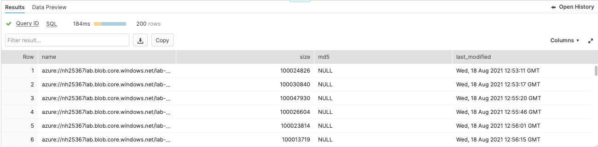
COPY INTO ITEMS_IN_SALES_ORDERS from @LAB_DATA_STAGE/items_in_sales_orders/items_in_sales_orders_0_0_0.csv.gz FILE_FORMAT = (FORMAT_NAME = CSVNOHEADER);

That took ~20 seconds, and ~9 million rows were loaded. There are still another 199 files and it would take approx 10-15 minutes to load the rest using the existing X-SMALL (1-node) warehouse. Instead, we will scale up our warehouse to an X-LARGE (16 nodes) and load the rest of the data in. It should run much faster!
ALTER WAREHOUSE ELT_WH SET WAREHOUSE_SIZE = 'X-LARGE';
COPY INTO ITEMS_IN_SALES_ORDERS from @LAB_DATA_STAGE/items_in_sales_orders/
FILE_FORMAT = (FORMAT_NAME = CSVNOHEADER);
Loading the rest of the data took ~45 seconds, which is much faster than 10-15 minutes. Lets also load the Sales Order table using this larger warehouse.
COPY INTO SALES_ORDERS from @lab_data_stage/sales_orders/ FILE_FORMAT = (FORMAT_NAME = CSVNOHEADER);
Now that we have loaded the two large tables, we can scale our warehouse back down to an X-SMALL as we no longer need the larger warehouse.
ALTER WAREHOUSE ELT_WH SET WAREHOUSE_SIZE = 'X-SMALL';
Let's also check how many rows are in each of these large tables:
SELECT COUNT(*) AS SALES_ORDERS_COUNT FROM SALES_ORDERS;

As you can see, we just loaded around 200 million Sales Orders and 1.8 billion Sales Orders Items - and we did it in a couple of minutes.
Snowflake Compute vs Other Warehouses Many of the warehouse/compute capabilities we just covered, like being able to create, scale up and out, and auto-suspend/resume warehouses are things that are simple in Snowflake and can be done in seconds. Yet for on-premise data warehouses these capabilities are very difficult (or impossible) to do as they require significant physical hardware, over-provisioning of hardware for workload spikes, significant configuration work, and more challenges. Even other cloud data warehouses cannot scale up and out like Snowflake without significantly more configuration work and time.
Warning - Watch Your Spend! During or after this lab you should NOT do the following without good reason or you may burn through your $400 of free credits more quickly than desired:
- Disable auto-suspend. If auto-suspend is disabled, your warehouses will continue to run and consume credits even when not being utilized.
- Use a warehouse size that is excessive given the workload. The larger the warehouse, the more credits are consumed.
For this module, we perform data analysis on the data that was loaded in module 4, and get the data in shape to be accessed in Power BI reports.
It is essential to model your data correctly to achieve the best performance from your Power BI Reports and Dashboards. There are many choices that data professionals can make with respect to data modeling for business intelligence (3NF, denormalized, snowflake schema, or star schema). However the best practice for modeling your data for Power Bi is a Star Schema. Additionally, we want to ensure that we are not loading any unneeded data into Power BI to reduce the amount of data that Power BI needs to scan and scan.
6.1 Perform Data Profiling
After loading data in Module 4 you should now have 6 dimension tables (Category, Channels, Department, Items, Locations, and States) and 2 fact tables (Items in Sales Orders and Sales Orders). We see that in the Locations dimension table contains a column named GEO which has a Snowflake Geography data type. Since, at the time of this lab, Power BI does not support this data type, we need an easy way to remove it before loading into Power BI. We also notice two Latitude and two Longitude columns.

While scanning the department table, we notice that there is a duplicate subordinate key value for the Frozen Dinner nd Disposable Cups departments
SELECT * FROM DEPARTMENT where department_id = 39;
We should check to see if there are other departments that are also duplicated by running a query that will allow us to clearly identify any duplicated department_id values.
SELECT
DEPARTMENT_ID
,COUNT(*) AS REC_COUNT
FROM PUBLIC.DEPARTMENT
GROUP BY 1
ORDER BY 2 DESC;
Analyzing the structure of the tables and their relationships, we notice that if we were to load them into Power BI as-is, the model would be presented to Power BI as a Snowflake schema. These are evident in the relationship between Items to the Category and Department tables and the Location to the States table.
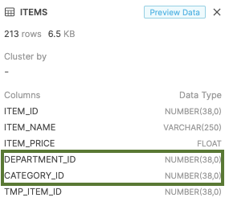
SELECT REGION FROM STATES;
SELECT REGION FROM LOCATIONS;
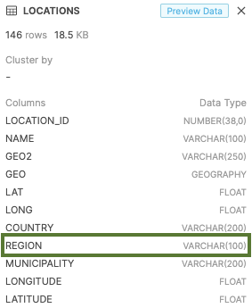
Lastly we see that the Sales Orders and Items in Sales Orders tables can be consolidated into a single table. If you consider these two tables as you would a sales receipt this makes sense. For example, when you purchase items from your local grocery store, the cashier would probably never present you with two receipts (one for the order itself and the other for a detailed list of the items that you purchased). Everything would appear on a single, consolidated receipt.
6.2 Create Views
Since Power BI sees Snowflake Tables and Views the same way, we will use a view to accomplish the task that we identified in through our data profiling exercise.
For the Locations table we need to execute the following query which merges the Locations and States tables and removes the unnecessarily duplicated Lat and Lon columns:
CREATE OR REPLACE VIEW PUBLIC.LOCATION_V AS
SELECT
L.LOCATION_ID,
L.COUNTRY,
L.REGION,
L.MUNICIPALITY,
S.STATE_NAME,
S.STATE_GEO,
L.LONGITUDE,
L.LATITUDE
FROM LOCATIONS L
INNER JOIN STATES S ON L.REGION = S.REGION;
For the Items table we add the related Department Name and Category Name from their respective tables, and remove Department ID 39 since we know through our data profiling exercise that the data for this specific Department ID is corrupted.
CREATE OR REPLACE VIEW PUBLIC.ITEMS_V AS
SELECT
ITEM_ID,
ITEM_NAME,
ITEM_PRICE,
CATEGORY_NAME,
DEPARTMENT_NAME
FROM ITEMS I
INNER JOIN DEPARTMENT D ON I.DEPARTMENT_ID = D.DEPARTMENT_ID
INNER JOIN CATEGORY C ON I.CATEGORY_ID = C.CATEGORY_ID
WHERE I.DEPARTMENT_ID != 39;
Lastly, we consolidate the Sales Orders and Items In Sales Orders tables (removing any unneeded columns)
CREATE OR REPLACE VIEW PUBLIC.SALES_ORDERS_V AS
SELECT
S.ITEM_ID,
S.QUANTITY,
SO.CHANNEL_CODE,
SO.LOCATION_ID,
SO.SALES_DATE,
S.ORDER_ID
FROM ITEMS_IN_SALES_ORDERS S
INNER JOIN SALES_ORDERS SO ON S.ORDER_ID = SO.SALES_ORDER_ID;
6.3 Create Aggregations
In then next module we will discuss aggregations and their purpose for facilitating big data business intelligence workloads in Power BI, but for now let's create an additional view to summarize the quantity of items purchased from the SALES _ORDERS_V view that we created in the last step.
CREATE OR REPLACE VIEW PUBLIC.SALES_ORDERS_V_AGG AS
SELECT
ITEM_ID,
CHANNEL_CODE AS CHANNEL_ID,
LOCATION_ID,
SUM(QUANTITY) TOTAL_QUANTITY
FROM PUBLIC.SALES_ORDERS_V
GROUP BY
ITEM_ID,
CHANNEL_CODE,
LOCATION_ID;
To improve the performance of your Direct Query model we suggest that you build a composite model that includes Aggregations in Power BI. In this lesson we will walk you through these steps.
7.1 Creating the Direct Query Model in Power BI
Open Power BI Desktop. Click Get data on the splash screen that appears.

Type snowflake in the textbox located directly below Get Data when the window opens.

Select Snowflake and click the Connect button.

The Snowflake connector page will appear. Enter your Server, Warehouse and click OK.
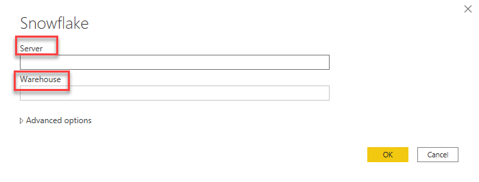
You must authenticate to your Snowflake server. Select Snowflake in the left navigation and enter your User name and Password and click OK.

The Navigator will open. Expand your database. If you are following along the database name will be LAB_DB. Then expand PUBLIC. Check the box next to the following items:
- ITEMS_V
- LOCATION_V
- SALES_ORDER
- CHANNELS

Click Load
On the Connection settings windows select the Direct Query radio button and click OK.
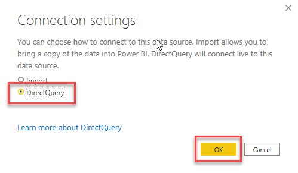
The model will begin to load and the Fields list will appear populated with tables. Similar to the image below:
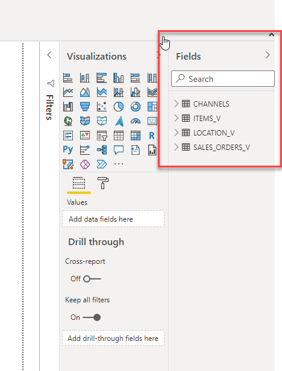
1 Click on View in the ribbon and click the item labeled Performance Analyzer.

2 On the Performance Analyzer windows click Start Recording.

Expand SALES_ORDER_V and check the box next to QUANTITY. That will take several seconds.

Expand QUANTITY in the Performance Analyzer window. Note the times.
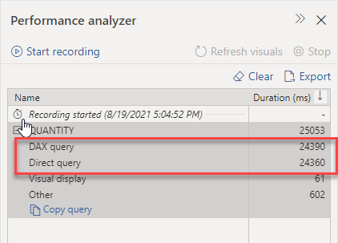
Download the Power BI Desktop file named DirectQuery.pbit from here: GitHub Repo
Open the Power BI Desktop file named DirectQuery.pbit. When prompted enter your Server, Warehouse and Database. Click OK.

Once the report loads, repeat steps 1-2. Click on the page labeled Overview and note the timings.
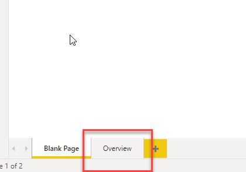
This will be the baseline used in our model optimization steps.

**Please keep this file open, as it will be used in the next module. **
7.2 Creating and Configuring the Composite Model in Power BI
In this module we will begin the optimization process by changing the storage model of several tables. This change will improve the performance of the report slightly. Modifying Table Storage Modes
- Open the Power BI Desktop file named DirectQuery.pbit if it is not already opened.
- Repeat step 7.1.16 if needed.
- Click on the Model icon located in the left navigation section of the report.

Select the CHANNELS table.
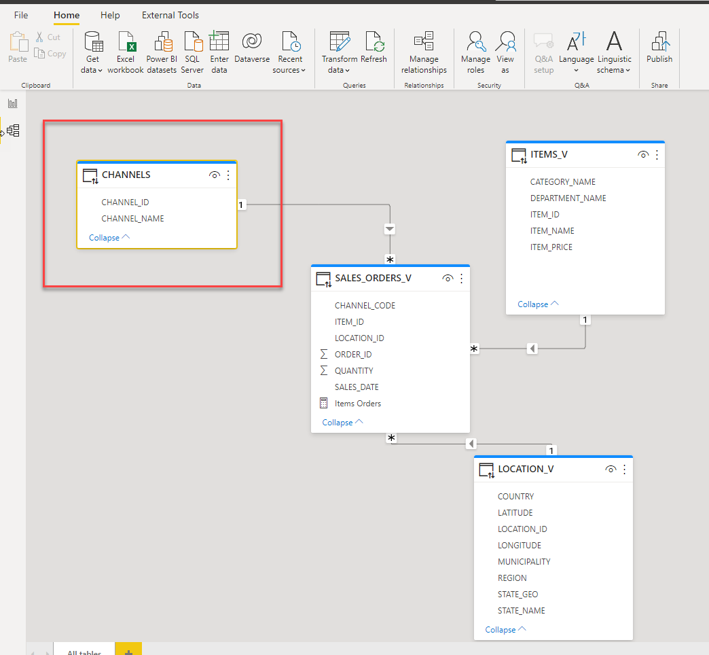
Locate the Properties section, which is to the right of the window.

Expand the Advanced section.

Click the Storage mode drop down and select Dual from the list of available choices.

Repeat the 3 steps above for the ITEMS_V and LOCATION_V tables. Click the Report icon located in the navigation section.
Click the Refresh visuals button.

Note the speed of the Select State and Select Category items. Much faster!
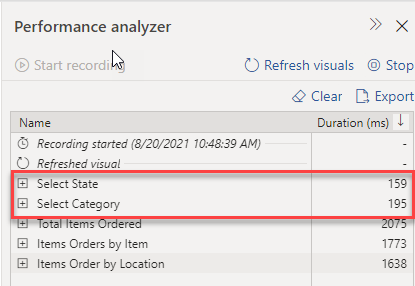
Please keep this file open, as it will be used in the next module.
7.3 Configuring Aggregation in Power BI
In the final section, we will be adding an additional table to the model that will complete the optimization of the report.
- If you closed the file from the previous module, open the Composite.pbit file and enter the required information when you are prompted. Refer to earlier steps for additional information.
- Click Home in the ribbon.

Click the drop-down arrow below the Get data icon located in the Data section of the home ribbon.

Select More from the list of available choices.

Type snowflake in the textbox located directly below Get Data when the window opens.
Select Snowflake and click the Connect button.
The Snowflake connector page will appear. Enter your Server, Warehouse and click OK.
Note: This screen may not appear. You must authenticate to your Snowflake server. Select Snowflake in the left navigation and enter your User name and Password and click OK.
The Navigator will open. Expand your database. If you are following along the database name will be LAB_DB. Then expand PUBLIC. Check he box next to SALES_ORDERS_V_AGG and click the Load button.

Select the Import radio button on the Connection settings window that appears. 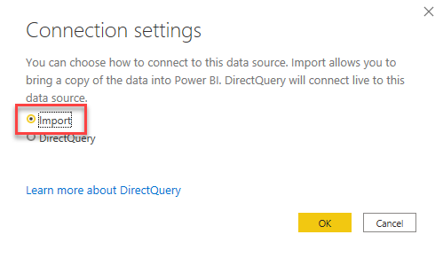
Click on the Model icon located in the left navigation section. Ensure that Home is selected, locate the Relationships section, and click the Manage Relationships icon and the corresponding window will open. Click the New button.

The Create Relationship window will open. Select ITEMS_V in the upper drop-down list and SALES_ORDERS_V_AGG in the lower. Power BI should automatically select the ITEM_ID column for both tables. If not, select both. Your window should resemble the following:

Click OK.
Repeat the two steps above this time selecting CHANNELS and SALES_ORDERS_V_AGG. Power BI should automatically select CHANNEL_ID for both tables. If not, do so and click OK and click Close.
Locate the SALES_ORDERS_V_AGG and click the ellipses that is in the top right corner.

Click it and select Manage aggregations from menu that appears.

Click the drop-down in the TOTAL_QUANTITY row and select Sum from the list of available choices. In the same row, move to the DETAIL TABLE column and select SALES_ORDERS_V from the drop-down. Finally, move to the DETAIL COLUMN column and select QUANTITY from the drop-down. Your window should resemble the following:

Click Apply all. Go back to the report view, enable the Performance Analyzer, start recording and refresh the visuals.
Note: Most visuals render in less than a second beside the Items Order by Location.

Expand that item and inspect the results. There should be a Direct query item. This is an indication that the aggregation was not used.

To solve this, we need to identify why the DAX query is not using the Aggregation. To do this, we are going to use DAX Studio. Ensure that you have this installed on your machine.
To launch DAX Studio, click External Tools in the ribbon and click DAX Studio.

Once DAX Studio opens, click Home in the ribbon. Click All Queries located in the Traces section.
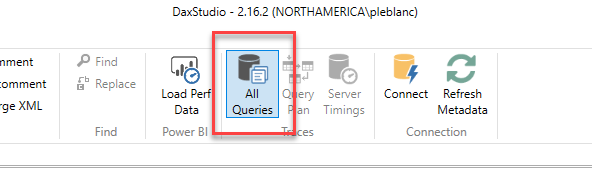
Click the All Queries tab located at the bottom of the windows.
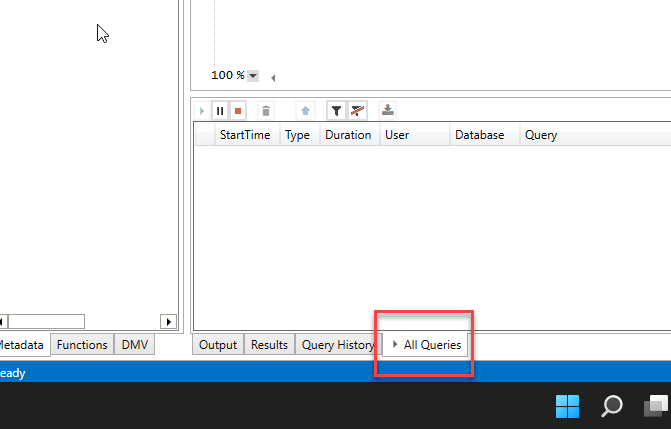
Go back to Power BI and ensure that the Performance Analyzer is recording. Hover over the Map visual (Items Order by Location). Click the Analyze this visual icon. It will be the first in the list of icon in the top right corner.

Back in DAX Studio, you will see a new row in the All Queries pane.

Double-click the row and the full DAX Query will appear in the DAX window.

Click the All Queries icon in the Traces section. This will turn off the trace.
Click the Server Timing icon in the Traces section.

Locate the Query section and click the Run button.
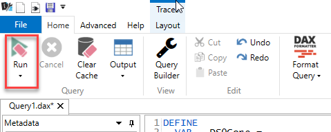
Click the Server Timings tab located at the bottom of the windows. You will see the results of the query execution. Click the row that contains <attemptFailed> in the Query column.

With that item select a new window will appear to the right. Click the drop-down arrow located to the left of Details. You may need to resize the window to view all the details.

From these details, we can identify why the query didn't use the aggregation. According to the information provided, our model is missing a mapping to the LOCATION_V[LONGITUDE] column.
There are a few options to fix this. Go to the Model view in Power BI and create a relationship between the LOCATION_V table and the SALES_ORDER_V_AGG table.
Rerun the query and DAX studio with Server Timings on. Review, the finds when the execution completes. The results should resemble the following:

If you rerun the report in Power BI, every visual should run quickly. Just like that your report it optimized!
This lab was designed as a hands-on introduction to Snowflake and Power BI to simultaneously teach best practices on how to use them together in an effective manner.
We encourage you to continue with your free Snowflake trial by loading in your own sample or production data and by using some of the more advanced capabilities of Snowflake not covered in this lab.
There are several ways Snowflake can help you with this:
- At the very top of the UI click on the "Partner Connect" icon to get access to trial/free ETL and BI tools to help you get more data into Snowflake and then analyze it
- Read the "Definitive Guide to Maximizing Your Free Trial" document at: https://www.snowflake.com/test-driving-snowflake-the-definitive-guide-to-maximizing-your-free-trial/
- Attend a Snowflake virtual or in-person event to learn more about our capabilities and how customers use us https://www.snowflake.com/about/events/
- Contact Sales to learn more https://www.snowflake.com/free-trial-contact-sales/
We also encourage you to continue to explore the capabilities of Power BI.
Resetting Your Environment
Resetting your Snowflake environment by running the SQL commands in the Worksheet:
USE ROLE SYSADMIN;
DROP DATABASE IF EXISTS LAB_DB;
USE ROLE ACCOUNTADMIN;
DROP WAREHOUSE IF EXISTS ELT_WH;
DROP WAREHOUSE IF EXISTS POWERBI_WH;
Resetting Your Azure Environment:
To avoid incurring charges for the Azure Blob Storage container that was deployed for the lab you will need to remove the services following these steps:
Delete the resource group that was created for the lab
Go to the Azure Portal and select "Resource Groups" from the menu.
Click on the resource group you created for this lab - e.g. "snowflake_powerbi_lab_rg"
Click on "Delete resource group" and type the name in the confirmation box.